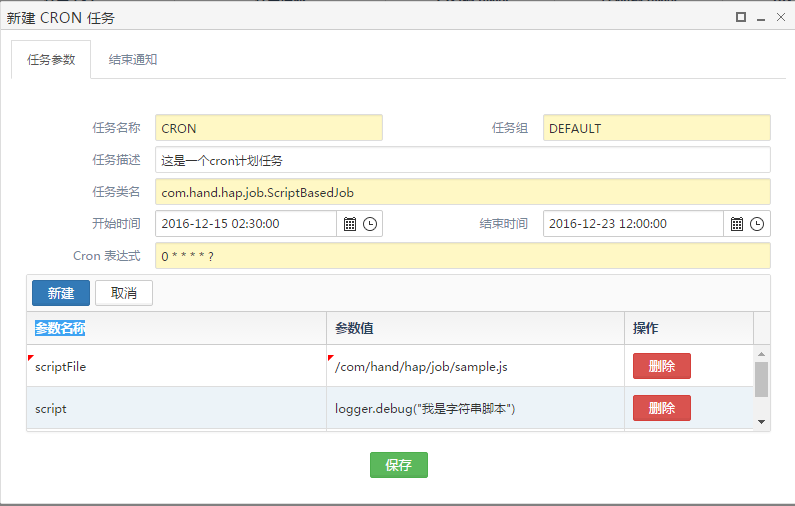
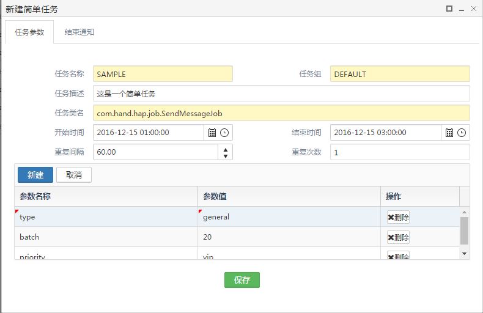
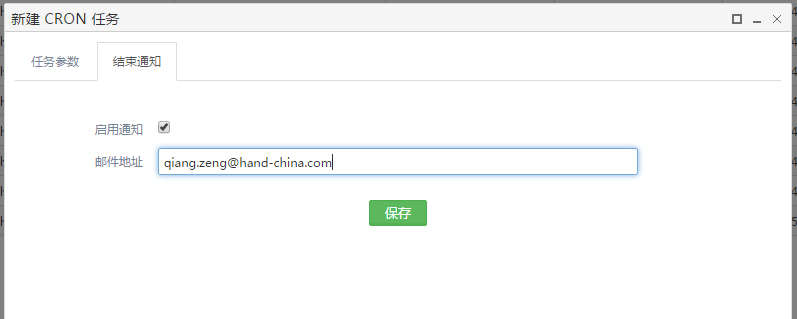
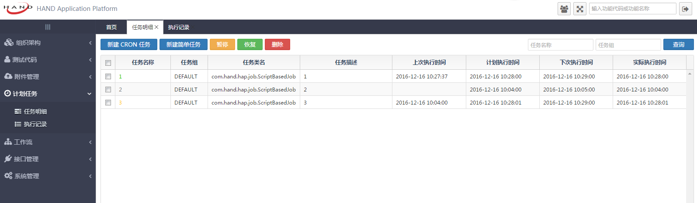
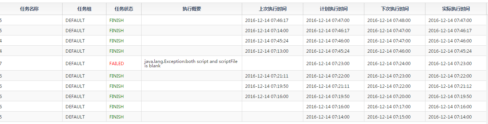

计划任务功能
HAP框架支持计划任务的开发和使用，该功能是基于Quartz这个开源的java作业调度框架,有数据库支持，集群，插件，JavaMail及其它，支持cron表达式等特点。
quartz集群特性：
1.quartz是通过借助关系数据库和JDBC作业存储来实现集群管理的。
2.通过使用共同的quartz数据库表，多个节点自然构成quartz集群。
3.当有任务需要执行时，集群中的节点通过抢占锁(数据库表)，来同步执行任务。各个节点之间的时间最好同步，误差不要超过一秒，否则其中某个节点将一直抢占任务。
4.集群通过故障切换和负载平衡的功能，能给调度器带来高可用性和伸缩性。
任务明细
HAP支持两种计划任务，一种是cron任务，一种是简单任务，他们的设置大体上相同，只是在执行计划时间上，一个使用了cron表达式，一个使用了重复间隔和重复次数
以下是使用说明：
新建cron任务，见下图

参数说明:
任务名称：可以由数字、字母和下划线构成，不建议包含中文。
任务组：任务所在的组别名称，方便进行任务管理。不填写默认为DEFAULT。
任务描述：描述该任务的职能。
任务类名：框架后台的Job全类名，内置Job类的有ScriptBasedJob和SendMessageJob。任务主要是由Job类执行。
开始时间，结束时间：该任务执行的时间区间,不指定的话，执行所有cron表达式指定的时间点。
cron表达式:使用cron表达式指定任务执行的时间点。cron表达式详情
新建参数：可以任意制定参数名称和参数值，只需要在后台的Job类中通过context.getMergedJobDataMap().getString("参数名")获取相应参数。
新建简单任务，见下图

参数说明:
任务名称，任务组，任务描述，任务类名同cron任务
开始时间，结束时间：任务执行的时间区间，不指定的话，执行所有任务重复次数。
重复间隔：任务执行的间隔，单位为秒。
重复次数:任务执行的次数，为0表示一直执行。
新建参数同cron任务。
结束通知
在新建cron任务和简单任务时都可以指定任务完成时的消息通知，见下图

勾选启用通知后，当计划任务完成时，会通知相应的用户。
任务明细界面说明，见下图

参数说明：
- 任务名称：点击计划任务名称，可以查看计划任务的详情信息。
- 任务组：计划任务所属组别。
- 任务类名：框架后台的Job全类名。
- 任务描述：对该任务的职能描述。
- 上次执行时间：上一次任务预计执行的时间点。
- 计划执行时间：预计完成上一次任务后，根据指定的执行间隔推算的本次任务执行的时间。
- 下次执行时间：预计执行完本次任务后，根据指定的执行间隔推算的下一次执行时间点。
- 实际执行时间：本次任务实际执行的时间点。
计划任务名称显示颜色
正在执行，颜色显示为绿色。
发生异常，颜色显示为红色。
任务暂停，颜色显示为橙色。
任务完成，颜色显示为灰色。
任务阻塞，颜色显示为黑色。
注意事项：
选中一个或多个计划任务，点击暂停按钮，这些任务将被挂起，任务名称颜色变为橙色。
选中一个或多个计划任务，点击恢复按钮，这些任务将继续执行，任务名称颜色变为绿色。
选中一个或多个计划任务，点击删除按钮，这些任务将被删除，任务对应的所有执行记录也将被删除。
每执行完一次任务，在执行记录中就会有一条对应的执行信息，当任务执行完毕后，将从任务明细的列表中移除。
框架内置Job类
内置的ScriptBaseJob类:
功能定义：
在框架内定时执行指定JavaScript脚本的Job。
参数说明：
可以传递的参数分别为
scriptName：JavaScript脚本名称。
scriptFile：JavaScript脚本文件在项目中的classpath路径。
script：(JavaScript字符串脚本)。
在JavaScript中使用java代码：
在ScriptBaseJob中执行的JavaScript脚本，内部可以使用java代码以及java对象。
框架内部定义了几个常用的java对象，分别为 applicationContext：ApplicationContext applicationContext;
out:System.out
logger: Logger logger = LoggerFactory.getLogger(ScriptServiceImpl.class)
举例：
var script = applicationContext.getBean("Script");
out.print("hello");
logger.debug("test");
注意事项：
同时必须且只能指定一种脚本方式，如scriptFile(/com/hand/hap/job/sample.js)或script（out.println("123");），scriptName可写可不写。
内置的SendMessageJob类:
功能说明：
发送消息,邮件的job.
参数说明：
可以传递的参数分别为
priority：消息优先级，普通或者VIP。
type：消息类型。
batch：批量发送消息数，默认为20。
自定义Job类
HAP框架也支持自定义Job类，只需要在新建任务时，输入自定义的任务全类名，就可以正常使用了。
介绍如何自定义Job类：
首先我们要继承AbstractJob抽象类，实现其中定义的抽象方法safeExecute()和isRefireImmediatelyWhenException()。
在safeExecute()中通context.getMergedJobDataMap().getString("参数名")设置前台页面传递的参数名称。
在safeExecute()中定义计划任务的执行逻辑。
在safeExecute()中调用自己的Service处理相关的业务。
setExecutionSummary()可以记录任务的执行概要，比如任务返回结果或任务发生异常的信息。该执行概要可以在计划任务的执行记录中看到。
isRefireImmediatelyWhenException()表示任务发生异常时的处理方式，返回true：重新执行Job，false：挂起Job，等待管理员处理。
新建Job类Demo
public class JobDemo extends AbstractJob {
private Logger logger = LoggerFactory.getLogger(JobDemo.class);
@Autowired
private IScriptService scriptService;
private Exception exception = null;
private Object result;
@Override
public void safeExecute(JobExecutionContext context) throws Exception {
String param1 = context.getMergedJobDataMap().getString("param1");
String param2 = context.getMergedJobDataMap().getString("param2");
Map<String, Object> param = new HashMap<>();
param.put("param1", param1);
param.put("param2", param2);
try {
result = scriptService.execute(param1, param2, param);
} catch (Exception e) {
if (logger.isErrorEnabled()) {
logger.error(e.getMessage(), e);
}
exception = e;
throw e;
}
if (exception != null) {
setExecutionSummary(exception.getClass().getName() + ":" + exception.getMessage());
} else {
setExecutionSummary("execute result:" + result);
}
}
@Override
public boolean isRefireImmediatelyWhenException() {
return false;
}
}
执行记录
每当执行完一次计划任务后，会在执行记录里面生成一条记录信息。在执行记录里面，我们可以看到计划任务的具体执行信息。
见下图 
参数说明：
- 任务名称：计划任务名称
- 任务组：计划任务所属组别
- 任务状态：任务完成状态，正常执行完为FINISH，执行出错为FAILED，任务被禁止为VETOED
- 执行摘要：任务执行过程中的信息，如执行结果，异常信息等。
- 上次执行时间：上一次任务预计执行的时间点。
- 计划执行时间：预计完成上一次任务后，根据指定的执行间隔推算的本次任务执行的时间。
- 下次执行时间：预计执行完本次任务后，根据指定的执行间隔推算的下一次执行时间点。
- 实际执行时间：本次任务实际执行的时间点。